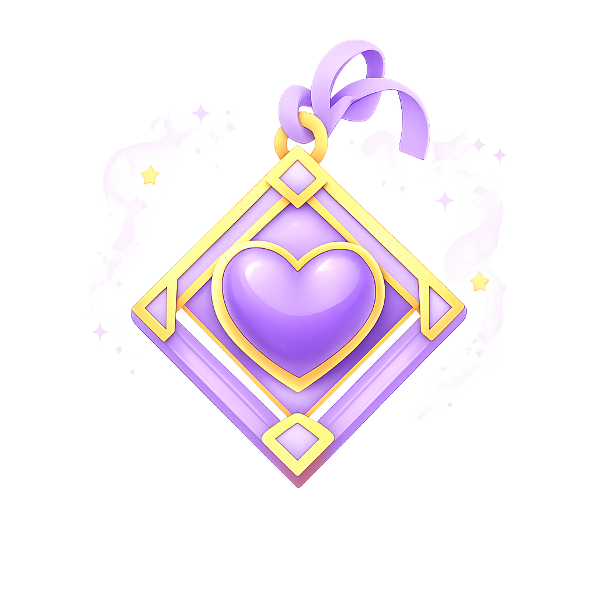
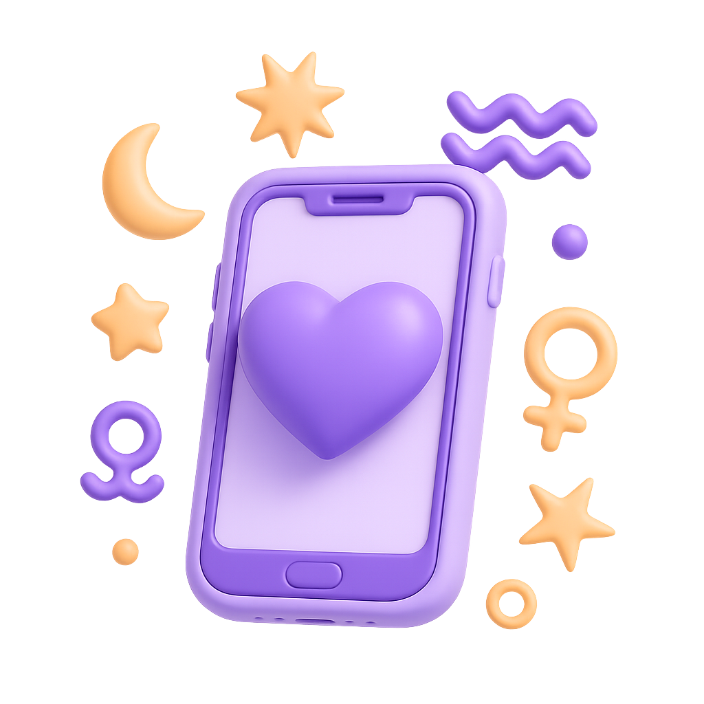

When Love Confuses You, a Love Psychic Can Light the Way
You wonder: Is this the one? Will they come back? Why do I still feel alone? A love psychic gives answers when you’ve lost your sense of direction. With intuition sharpened through years of experience, they help you return to yourself. Ask your question.

Veronika
4.8tarot reader
online
9 years of experience
16752 consultation done
The main goal of my work is to help find answers to tormenting questions, understand and love yourself and the world, live in harmony and pleasure. And also to maintain a connection with your Higher Self, to be able to live ...
The main goal of my work is to help find answers to tormenting questions, understand and love yourself and the world, live in harmony and pleasure. And also to maintain a connection with your Higher Self, to be able to live ...
The main goal of my work is to help find answers to tormenting questions, understand and love yourself and the world, live in harmony and pleasure. And also to maintain a connection with your Higher Self, to be able to live ...
The main goal of my work is to help find answers to tormenting questions, understand and love yourself and the world, live in harmony and pleasure. And also to maintain a connection with your Higher Self, to be able to live ...
The main goal of my work is to help find answers to tormenting questions, understand and love yourself and the world, live in harmony and pleasure. And also to maintain a connection with your Higher Self, to be able to live ...
The main goal of my work is to help find answers to tormenting questions, understand and love yourself and the world, live in harmony and pleasure. And also to maintain a connection with your Higher Self, to be able to live ...
”The psychic reading on the Neuro website was exactly what I needed. It helped me to learn how to trust myself more.
MMax
”This Nebula horoscope was quite spot-on, which I didn’t expect! I rarely leave reviews, but I couldn’t not do it here. Loved the experience!
EEva
”The session I had turned out to be very reassuring for me. I was struggling with my confidence, and it helped quite a bit.
What a Love Psychic Can Help You See
If Someone Thinks of You
A love psychic reading listens for the unspoken. Sometimes, it reveals feelings still alive in someone or guides you toward the part of yourself reaching out.
If You’re Ready for Love
Love psychics can hold up the lantern, so you can walk forward without fear, know what you need, and build new relationships.
If Your Intuition Is Right
Validation is powerful. A love psychic helps confirm what your soul already suspects, or tells when you're overthinking.
If You Feel Lost In Your Relationship
A love psychic offers perspective when you're too close to the pain to see how your relationship looks clearly.
Love Psychic Readings People Turn to More Often
Numerology Compatibility Insight
This love reading uses the numbers in your names and birthdays to show how compatible you two are, reveal soul lessons, and tell why you two have met.
Tarot for Love and Relationships
A tarot love reading helps you see where your relationship is headed, what (or who) stands in the way, and what can be fixed.
Palm Reading for Romantic Destiny
A palm reading shows how you love, how deeply, and when big changes may come. Your hands remember what your heart tries to forget.

Frequently Asked Questions About Love Readings
A love psychic can help you understand patterns, emotional signals, and the qualities of a connection, but the final choice remains yours.
Bring one clear question, a calm mind, and the details that matter most to your relationship situation.
Yes. A love psychic can help you see what lessons remain, what questions still tangle, and how to slowly loosen what stops you from moving on.
A reading can explore likely emotions and energetic patterns, but it should be used as guidance rather than control over another person.
The cost depends on the advisor and session type. Neuro keeps online readings easy to start and transparent.
There is a specific kind of Google search that happens at night after a breakup. You type in something like: “Will I ever find love again?”, “Is he my soulmate?”, or “Can psychics tell if my ex is coming back?”
You want signs. You want answers. You want to know that the story will continue. You want to know that someone, somewhere, can offer answers, preferably with a deck of tarot cards. This is why love, the ache of it, the absence of it, and the possibility of it turn many people to love readings on Nebula.
What do you do with the emotional pain that lives inside the body and mind after a breakup? There’s no single solution that works the same for everyone. It lingers in the chest. It becomes a silence that remains even when surrounded by people, noise, and the whole life. This is the condition of heartache, waiting, longing, and not knowing.
Swipe culture has made relationships disposable. Ghosting is considered a normal form of communication. Somehow, someone decided that “situationship” is a fine form of attachment.
A good love reading is part conversation, part reflection. When you talk to a psychic, they tune in to energy and intuition to say something like “Here’s what I see. Here’s what might be blocking you. Here’s what you might not be ready to admit yet.”
Because if you're googling “Why hasn’t he texted back” for the 45th time, it's time to try something different. It's time to return to the ancient instinct to look up at the stars and hear what they tell you. Book a love reading. Ask questions you may be reflecting on privately.